💡 Presentación: Digitalización y la Industria 4.0
📊 Diapositiva 1: Cuarta Revolución Industrial (Industria 4.0)
Establece los fundamentos de la digitalización. 📊
Título El Futuro es Hoy: Digitalización Aplicada a los Sectores Productivos
Bienvenidos a la Cuarta Revolución Industrial (Industria 4.0)
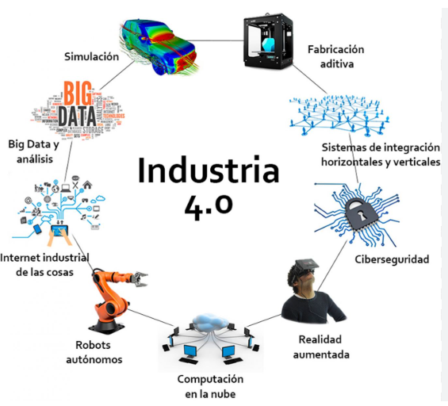
🌐 Diapositiva 2: ¿Qué es la Industria 4.0?
De la Máquina de Vapor a la Inteligencia Artificial 🚂➡️🤖
1ª Rev.: Máquina de vapor y producción mecánica.
2ª Rev.: Electricidad y producción masiva.
3ª Rev.: Informática y automatización de la producción.
4ª Rev.: Fusión de lo físico y lo virtual con IA, IoT y sistemas ciberfísicos.
🧠 Diapositiva 3: Pilares Tecnológicos de la Industria 4.0
El Ecosistema 4.0: Tecnologías Digitales Habilitadoras (TDH)
Las TDH son esenciales para la transformación digital:
* Inteligencia Artificial (IA): Tecnología clave para la transformación.
* Sistemas Ciberfísicos (CPS): Unen dispositivos físicos, tecnología, informática y redes de información.
* IoT/IIoT: Conexión de dispositivos, sensores y equipos de red para recopilar datos industriales.
* Cloud Computing: Permite el teletrabajo y horarios flexibles para los empleados.
* Big Data y Gemelos Digitales.
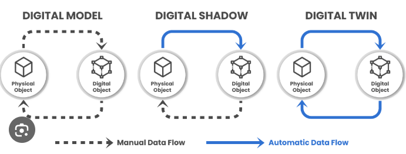
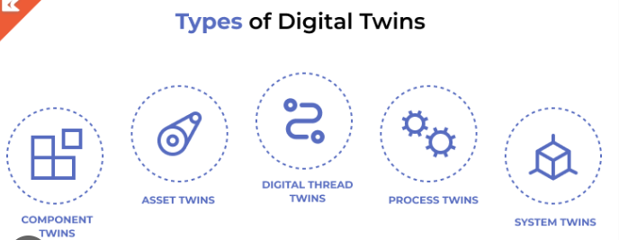
🤖 Diapositiva 4: Sistemas Ciberfísicos (CPS) en Acción
CPS: La Fusión de Hardware, Software y Procesos Físicos
Los Sistemas Ciberfísicos (CPS) combinan software, hardware y procesos físicos para realizar funciones y tareas avanzadas.
Funcionalidad
Son clave para la automatización avanzada de procesos industriales al integrar sensores, actuadores y control en la maquinaria.
Ventajas
* Optimización del proceso de producción.
* Corrección de problemas antes de que ocurran.
* Mejora de la eficiencia energética.
Ejemplos
Vehículos autónomos, fábricas inteligentes, instrumental médico asistido.
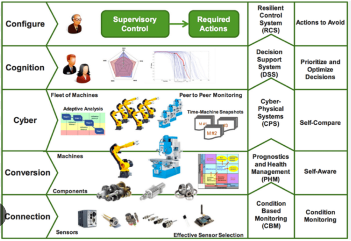
🤝 Diapositiva 5: La Interrelación con el Mundo Virtual
Del Mundo Físico al Mundo Virtual (Y Viceversa)
Concepto
El mundo virtual es un entorno simulado por ordenador que es persistente y adaptable.
El Modelo VICE (Clave para Negocios)
👁️ V Visualize and Vision (Visualizar y Ver)
ℹ️ I Inform and Instruct (Informar e Instruir)
🤝 C Communicate and Collaborate (Comunicar y Colaborar)
🎮 E Engage and Entertain (Interactuar y Entretener)
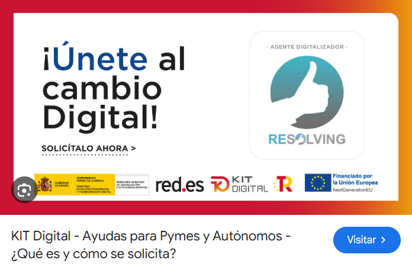
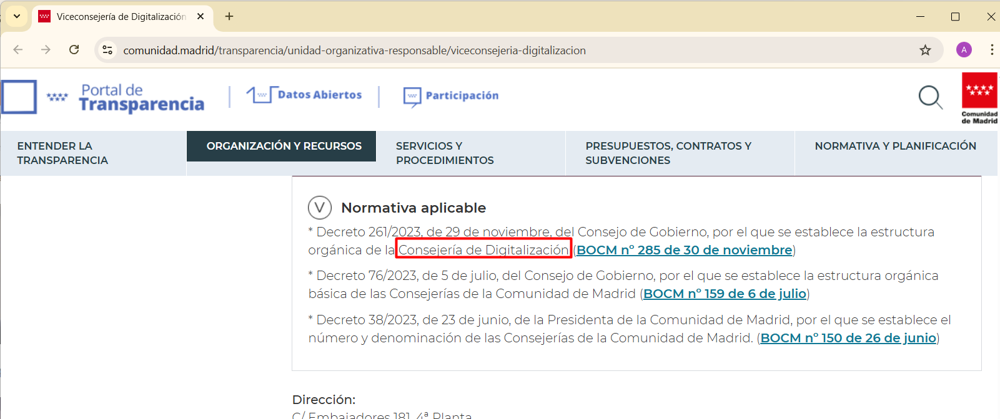
👓 Diapositiva 6: Realidad Aumentada y Metaverso
Experiencias Inmersivas: RA y Metaverso
Realidad Aumentada (RA)
Combina el mundo real con el virtual mediante una cámara y una pantalla, añadiendo capas de información visual sobre el mundo real.
RA Aplicada
* Arquitectura: Prever el entorno de edificios antes de construir.
* Automoción: Navegadores integrados en parabrisas.
* Medicina: Generación de imágenes 3D de órganos antes de operar.
Metaverso
Entorno multiusuario persistente que fusiona la realidad física con la virtualidad digital.
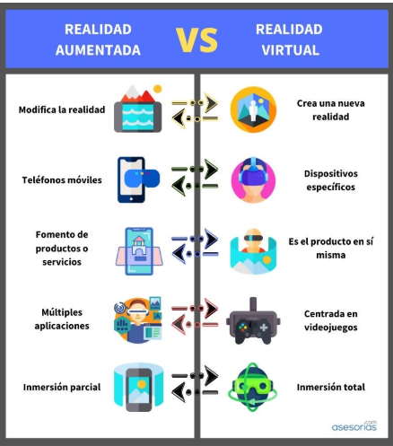
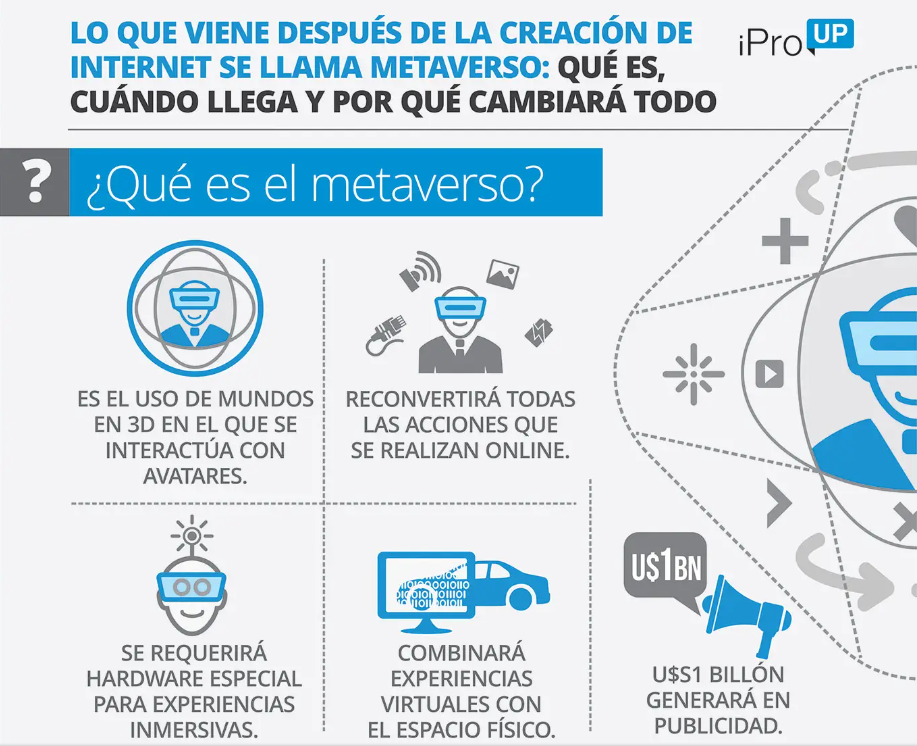
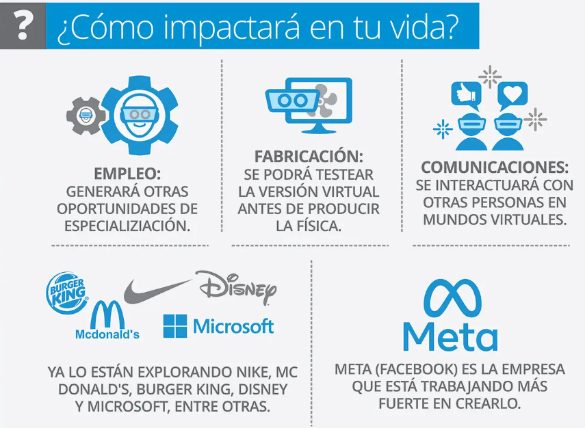
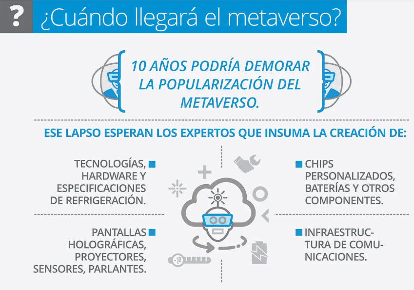
📈 Diapositiva 7: Beneficios de la Digitalización para la Empresa
Resultados Tangibles: Ventajas de la Digitalización 💰✅
Cadena de Suministro
Mejores decisiones en tiempo real gracias a la interconexión entre clientes, productores y proveedores.
Sostenibilidad
Mayor control del proceso productivo, generando menos desperdicios y mayor eficiencia energética.
Flexibilidad Laboral
El uso de tecnología cloud facilita el teletrabajo y los horarios flexibles.
Factores Clave de Éxito 4.0 - Agilidad, Flexibilidad y Eficiencia.
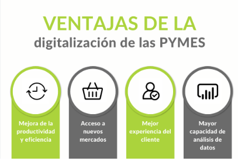
🛠️ Diapositiva 8: Nuevos Requisitos y Roles Profesionales
La Empresa Digital: Requisitos y Know-how
Adaptación Empresarial
Es necesaria una adaptación que incluye:
* Enfoque Ágil: Equipos de trabajo colaborativos.
* Formación Continua: Impulsar la innovación.
* Ecosistema Tecnológico: Innovar junto a proveedores y clientes.
Habilidades Clave
* Conocimiento Técnico: Manejo de IIoT, Cloud y Big Data.
* Know-how (Saber Hacer): Capacidades que permiten diferenciarse del resto.
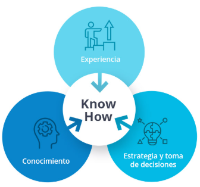
🙏 Diapositiva 9: Conclusión y Cierre
Conclusiones y Próximos Pasos
La digitalización no es una opción, sino un imperativo para la competitividad, la eficiencia y la sostenibilidad en todos los sectores productivos.
Cita
"La tecnología clave para la transformación es la Inteligencia Artificial (IA), que está cambiando no solo el mercado laboral, sino también la sociedad."
Contacto
¿Preguntas? ¡Hablemos de Digitalización!
🎯 Diapositiva 10: Aplicación Práctica / Desafío tipo
¡Manos a la Obra! Estudio de Caso
Actividad: Analiza un ejemplo de empresa innovadora en la Industria 4.0:
Tesla (mencionada como ejemplo de factoría con CPS).
Desafío
* ¿Qué Sistemas Ciberfísicos utiliza Tesla para optimizar su producción?
* ¿Cómo aplica los KPI como OEE, MTBF o MTTR en su factoría?
* ¿Qué beneficios obtiene la empresa al adaptar la producción sin una reconfiguración extensa de la maquinaria?